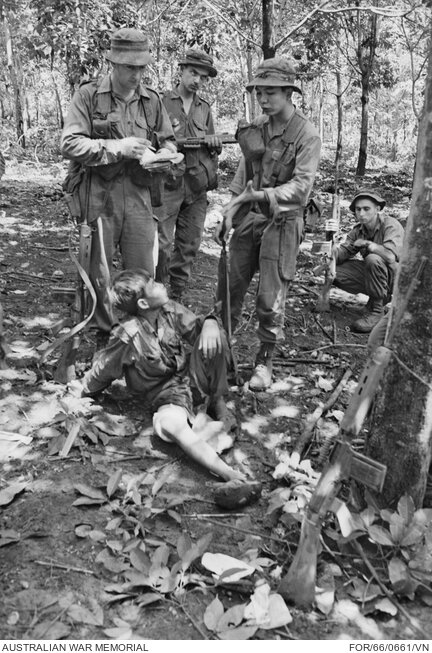

Painting of the first day of the battle, with HMS Namur in the centre left
The naval Battle of Lagos took place between a British fleet commanded by Sir Edward Boscawen and a French fleet under Jean-Francois de La Clue-sebran on 18-19 August 1759 during the Seven Years' War. The French Mediterranean Fleet successfully passed through the Strait of Gibraltar, but was sighted by a British ship. The British fleet in Gibraltar was undergoing a major refit and left port amidst great confusion, with many ships delayed and sailing in a second squadron. Aware that he was pursued, La Clue changed course, but half of his ships failed to follow him in the dark. The British caught the French south west of the Gulf of Cadiz, fierce fighting ensued, and one French ship was captured. The British pursued the remaining six French ships overnight and two managed to escape. The four survivors attempted to shelter in neutral Portuguese waters near Lagos, but Boscawen violated that neutrality, capturing two of the ships and destroying the other two. (Full article)
Recently featured :
Did You Know

Synagogue of Deal

- Ronnie O'Sullivan (pictured) wins the World Snooker Championship, defeating Kyren Wilson in the final.
- Ugandan Joshua Cheptegei sets a new world record in the men's 5000 metres
- Israel and the United Arab Emirates agree to establish diplomatic relations
- Pro-democracy protests intensify in Belarus after the contested reelection of incumbent President Alexander Lukashenko
Recent deaths:
On This Day
August 18: Long Tan Day in Australia (1996)
